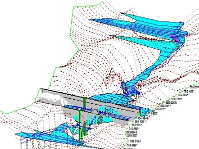

Bridges replacement. Hydraulic analysis
CPS Engineers, retained by HUALCA provided hydraulic and hydrology design services for the replacement of anging bridges over rivers in Puno, Peru.
My role:
For every basin, a digital terrain data were analysed and transformed into a hydrologic data structure that represents the drainage network using the Geospatial Hydrologic Modeling Extension (HEC-GeoHMS).

Example of a digital elevation model (DEM) of a studied basin
Next, a HEC-HMS model was prepared for every basin in order to develop inflow hydrographs for the rivers, for the 100-, 140-, and 500-year events.
Then hydraulic analyse were launched. A HEC-RAS model was developed from available geodata, using set of tools HEC-GeoRAS. The model was run for existing conditions and the new bridge design.

Example of a hydraulic model (HEC-RAS) of a studied river
The HEC-RAS model was used to assess new bridge scour and erosion risk.
Example of a river profile (HEC-RAS)
Three methodology of general scour was compared: Blench, Lacey and Lichtvan Lebediev method.
Also color graphics showing modeled flood depths and velocities were prepared for every basin.

Example of a flood map (GIS tools)